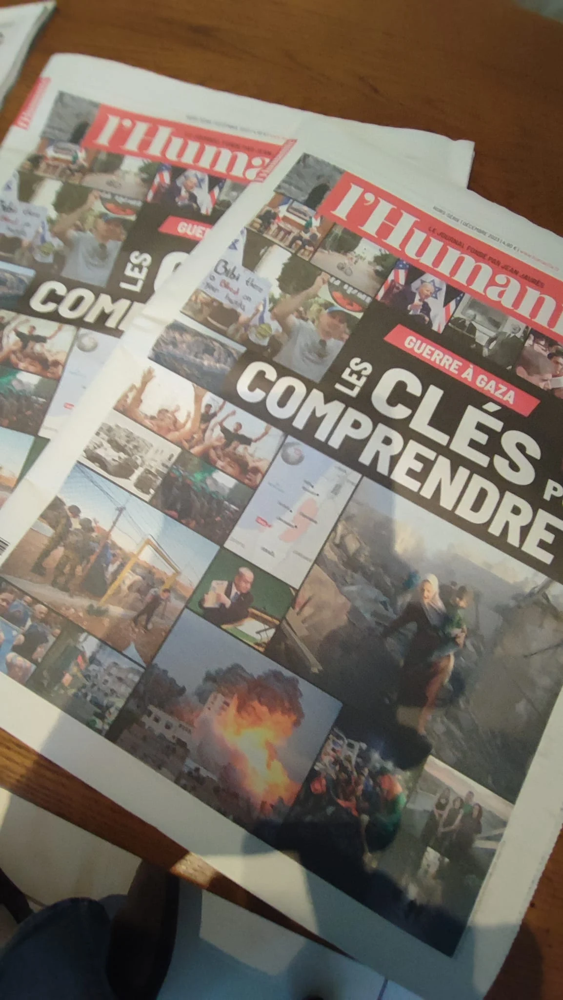

Publication d’archives
Un numéro hors-série de #LHumanité sur la guerre à #Gaza. Les clés pour comprendre. Ce numéro spécial se veut…
Date indiquée par Facebook · 7 décembre 2023
Texte conservé avec la publication
Un numéro hors-série de #LHumanité sur la guerre à #Gaza. Les clés pour comprendre. Ce numéro spécial se veut comme un appel à l'action car l'après Gaza ne peut-être fait par les semeurs de haine et les belligérants qui plongent les peuples israélien et palestinien dans l'effroi.

Sources
Archive rouge · export Facebook · AR-0002-FB-01526
À lire aussi · Arrestation de la militante Mariam Abu Daqqa